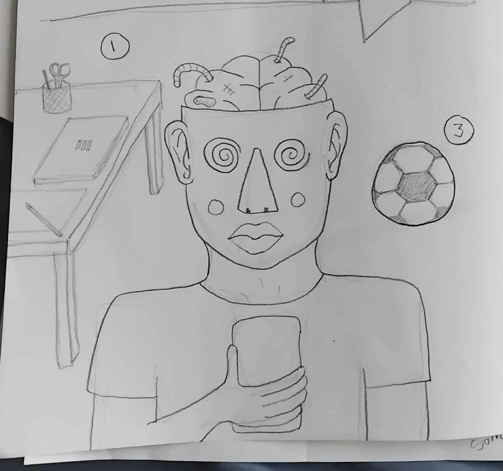
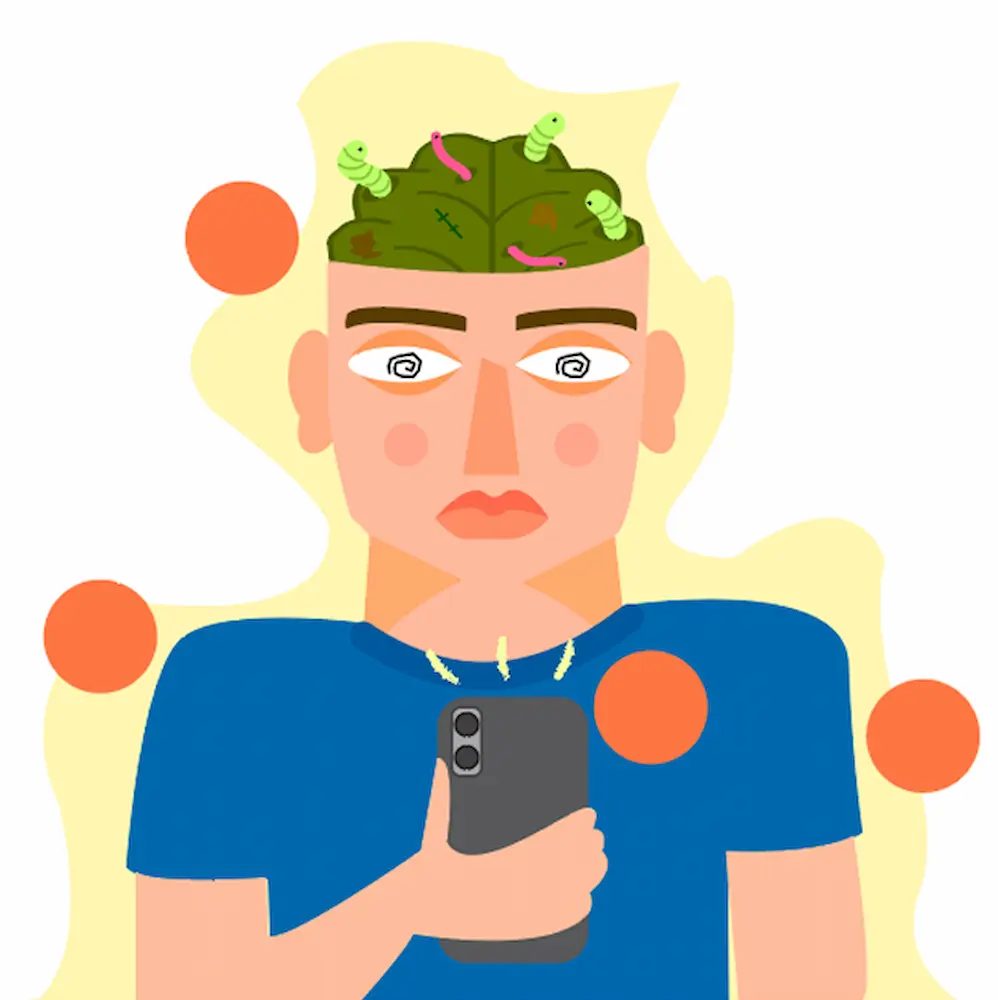
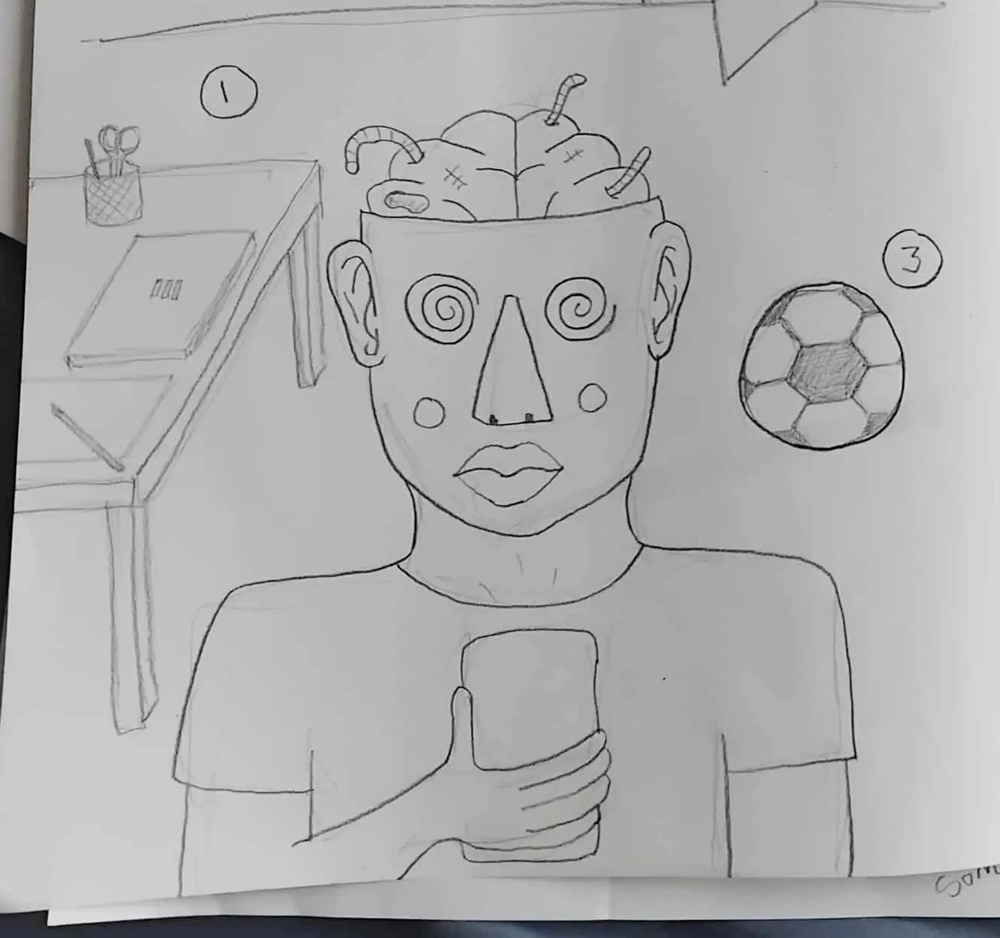
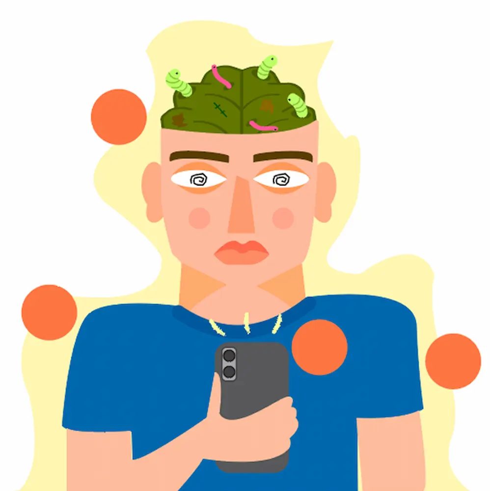

❖ Emne:
Computere
❖ Fokus:
CSS styling
❖ Projektbeskrivelse:
Jeg skulle indsætte udleveret tekst og billeder ind i HTML, bruge grids og bygge siderne op efter udleverede wireframes og layoutdiagrammer.
❖ Afleveringskrav:
- HTML sider skal følge udleverede wireframes
- Style med farve og mindst to fonte
- Layout skal følge udleverede layoutdiagrammer
- HTML sider skal validere uden fejl
❖ Emne:
Grundlæggende web
❖ Fokus:
- HTML, CSS, grids
- Designprincipper, gestaltlove
Hjælpemidler
- CodePen
- FreeCodeCamp
- Grid ExerCSSises
- Squoosh
- Google Fonts
- Fontsquirrel
- Fontjoy
- whatthefont
Færdigheder
HTML ⬤⬤〇〇〇
CSS styling ⬤⬤〇〇〇
CSS grid ⬤〇〇〇〇
Mest inspirerende del
At lære om designprincipper, gestaltlove, fonte og farver. Vi fik til opgave at lave mini audits og style tiles til hjemmesider vi selv fandt.
Mest udfordrende del
At lære om grid layouts. Udover de sjove design opgaver, skulle vi også igennem utallige grid øvelser. Det var kun fedt når det virkede.
Mest inspirerende del
At lære om designprincipper, gestaltlove, fonte og farver. Vi fik til opgave at lave mini audits og style tiles til hjemmesider vi selv fandt.
Mest udfordrende del
At lære om grid layouts. Udover de sjove design opgaver, skulle vi også igennem utallige grid øvelser. Det var kun fedt når det virkede.
❖ Emne:
Multimediedesign (selvvalgt)
❖ Fokus:
Research/struktur og planlægning af design
❖ Projektbeskrivelse:
Her skulle jeg vælge et emne og researche emnet, målgrupper, andre sider, visuel stil, user stories mm. og lave prototyper og tests. Herefter kode en side om det valgte emne fra bunden.
❖ Projektstyring:
❖ Afleveringskrav:
- Kodet site skal tage udgangspunkt i digital prototype
- Minimum 3 HTML sider
- Der skal være et favicon
- HTML sider skal validere uden fejl
- Dokumentation af kode og tests
❖ Emne:
UX/UI
❖ Fokus:
- Idegenerering, research metoder
- Kodning, dokumentation
Research metoder
- Desktop research
- User stories
- Lightning demo
- Kvantitative undersøgelser
- Kvalitative undersøgelser
Færdigheder
HTML ⬤⬤⬤〇〇
CSS styling ⬤⬤⬤〇〇
CSS grid ⬤〇〇〇〇
Ideudviklingsmetoder
- Brainstorm
- Mind map
- Solution sketch
- Crazy 8
- Sketch museum
Mest inspirerende del
At planlægge og designe min helt egen hjemmeside.
Mest udfordrende del
Jeg ville blive så færdig med siden som muligt, så jeg skrev indhold til alle 20 jobtitler i den harmonika du kan se nedenfor.
Mest inspirerende del
At planlægge og designe min helt egen hjemmeside.
Mest udfordrende del
Jeg ville blive så færdig med siden som muligt, så jeg skrev indhold til alle 20 jobtitler i den harmonika du kan se nedenfor.
❖ Emne:
Brain rot (selvvalgt)
❖ Fokus:
Infografik/JavaScript/CSS animationer/billedgenerering
❖ Projektbeskrivelse:
Vi skulle lave et “emergency site” baseret på at løse en selvvalgt nødsituation. Fundamentet til siden var lavet. Jeg skulle bruge Ai (adobe illustrator) til at tegne logo og infografik og AI til at generere billeder og tekstindhold. Jeg skulle bruge JavaScript og animationer til at gøre siden interaktiv.
❖ Projektstyring:
❖ Afleveringskrav:
- Kodet site skal tage udgangspunkt i downloadet kode og følge udleverede wireframes
- Design og stil skal understøtte emnet
❖ Emne:
Grundlæggende JS
❖ Fokus:
- Idegenerering, indholdsproduktion, grafik
- JavaScript, forms, CSS variabler
Hjælpemidler
- Adobe Illustrator
- LinkedIn Learning
- Adobe Firefly
Færdigheder
HTML ⬤⬤⬤⬤〇
CSS styling ⬤⬤⬤⬤〇
CSS grid ⬤〇〇〇〇
CSS variabler ⬤〇〇〇〇
JavaScript ⬤〇〇〇〇
Mest inspirerende del
At bygge videre på en grå side og give den liv + at designe og tegne min egen infografik.
Mest udfordrende del
At skulle “overtage” og kode videre på et projekt var lidt besværligt. Der var blevet gjort ting for at få siden til at virke på en bestemt måde, som jeg ikke forstod og som nogle gange drillede ift. at implementere ting på siden.
Mest inspirerende del
At bygge videre på en grå side og give den liv + at designe og tegne min egen infografik.
 



Mest udfordrende del
At skulle “overtage” og kode videre på et projekt var lidt besværligt. Der var blevet gjort ting for at få siden til at virke på en bestemt måde, som jeg ikke forstod og som nogle gange drillede ift. at implementere ting på siden.
❖ Emne:
CRU$H Vintage (selvvalgt virksomhed)
❖ Fokus:
Redesign af eksisterende side/highlight af vintage-thrift kultur
❖ Projektbeskrivelse:
Vi skulle som gruppe redesigne en selvvalgt virksomheds hjemmeside og implementere både indholds- og videoproduktion. Vi skulle lave en HTML side per mand og have god projektstyring og kommunikation.
❖ Projektstyring:
Figma, Trello, Processdokumentation
❖ Afleveringskrav:
- Der skal implementeres video og minimum 3 selvproducerede fotos på siden
- 1 HTML side per person
- Der skal være brugt CSS variabler og forms
- Sitet skal være responsivt i mobil/desktop og mellemliggende skærmopløsninger
- Dokumentation fra Trello, Figma og doc
❖ Emne:
Grundlæggende Indhold
❖ Fokus:
- Gruppearbejde, virksomhedskontakt, field work
- Indholds- og videoproduktion, git og GitHub
Hjælpemidler
- Adobe Photoshop
- Adobe Premiere Pro
Færdigheder
HTML ⬤⬤⬤⬤〇
CSS styling ⬤⬤⬤⬤〇
CSS grid ⬤⬤〇〇〇
CSS variabler ⬤⬤⬤〇〇
JavaScript ⬤〇〇〇〇
Mest inspirerende del
At bruge alles styrker forskelligt. Jeg var god til kode-delen, andre var bedst til design og ideudvikling, research eller videoproduktion.
Mest udfordrende del
Jeg var meget heldig med min gruppe, vi havde både god kommunikation og godt samarbejde. Shout out Alex, Ea, Joakim og Erik! Men det var alligevel udfordrende at være gruppens git master og ansvarlig for den generelle CSS.
Mest inspirerende del
At bruge alles styrker forskelligt. Jeg var god til kode-delen, andre var bedst til design og ideudvikling, research eller videoproduktion.
Mest udfordrende del
Jeg var meget heldig med min gruppe, vi havde både god kommunikation og godt samarbejde. Shout out Alex, Ea, Joakim og Erik! Men det var alligevel udfordrende at være gruppens git master og ansvarlig for den generelle CSS.
❖ Emne:
Min egen portfolio
❖ Fokus:
At designe en portfolio webside og samle mine projekter
❖ Projektbeskrivelse:
Design og kod en hjemmeside med alt hvad det indebærer uden hjælp på ca. 3 uger og forsvar/præsentér den til eksamen.
❖ Projektstyring:
❖ Afleveringskrav:
- Mindst 3 HTML sider
- Der skal være forside og “om mig” side
❖ Emne:
Portfolio eksamen
❖ Fokus:
At bruge de ting vi har lært gennem semesteret og lave et bomb ass portfolio site
Værktøjer
Adobe Illustrator
Squoosh
Figma
Færdigheder
HTML ⬤⬤⬤⬤⬤
CSS styling ⬤⬤⬤⬤〇
CSS grid ⬤⬤⬤〇〇
CSS variabler ⬤⬤⬤〇〇
JavaScript ⬤⬤〇〇〇
Mest inspirerende del
At designe min egen portfolio og friheden til selv at bestemme. Det er for eksempel nok ikke meningen at man skal inkludere ting der ikke er studierelevante, men øhh... det er MIN side.
Mest udfordrende del
Jeg gav mig selv et stort arbejde med at skulle lave alle “h1’ere” på siden og alt forsideindholdet + al byggeklods-teksten på “projekter” siden i Ai som SVG’er.
Mest inspirerende del
At designe min egen portfolio og friheden til selv at bestemme. Det er for eksempel nok ikke meningen at man skal inkludere ting der ikke er studierelevante, men øhh... det er MIN side.
Mest udfordrende del
Jeg gav mig selv et stort arbejde med at skulle lave alle “h1’ere” på siden og alt forsideindholdet + al byggeklods-teksten på “projekter” siden i Ai som SVG’er.